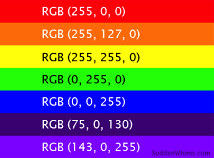

Heim
Binære tallsystemet
Bilde
Når ei datamaskin skal lese fargekodar, skjer det gjennom RGB, som står for "Red", "Green", og "Blue". Nedanfor kan du sjå RGB kodar til forskjellige fargar. Det er vanlegast å ha kvar farge oppdelt i 256 nivå, dermed får ein mykje fleire nyansar av kvar farge. Med kombinasjonane av alle desse fargane i desse nyansane, kan ein lage alle fargane
